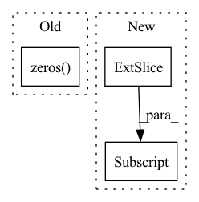

Pattern ID :2415

Before Change
output = output.permute(0,2,1)
//predict_vecs: batch_size, voc_dim, max_length
predict_vecs = torch.zeros(batch_size, self.voc_dim, tgt.size(1) ).to(self.device)
curr_sz = tgt.size(1)
predict_vecs[:,:,:curr_sz] = output[:,:,:curr_sz]
After Change
else hidden[0] //h_n
// hidden: 1, batch_size, hidden_dim * directions ->tking only last two layers
hidden = torch.cat((hidden[-2,:,:], hidden[-1,:,:]), dim = -1) if self.directions == 2 \
else hidden[:,-1,:]
//output :shp: batch_size, word_voc_dim
In pattern: SUPERPATTERN
Frequency: 3
Non-data size: 3
Instances
Fragment ID: 14545085
Project Name: ai4bharat/indiannlp-transliteration
Commit Name: dd71aab694ee1ae4c77b39cda0366d04f31f0909
Time: 2020-06-16
Author: josephgeobenjamin@gmail.com
File Name: algorithms/recurrent_nets.py
M Class Name: CorrectionBasicNet
N Class Name: VocabCorrectorNet
M Method Name: forward(3)
N Method Name: forward(4)
M Parent Class: nn.Module
N Parent Class: nn.Module
M File Name: algorithms/recurrent_nets.py
N File Name: algorithms/recurrent_nets.py
M Start Line: 618
M End Line: 640
N Start Line: 646
N End Line: 668
'>
Before Change
y_pred_pos = y_pred - (1-y_true) * 1e12
y_pred_neg = y_pred - y_true * 1e12
y_pred_pos = torch.cat([y_pred_pos, torch.zeros(y_pred_pos.shape[0], 1, device=y_pred_pos.device)], dim=-1)
y_pred_neg = torch.cat([y_pred_neg, torch.zeros(y_pred_neg.shape[0], 1, device=y_pred_neg.device)], dim=-1)
loss = torch.sum(torch.logsumexp(y_pred_pos, 1) + torch.logsumexp(y_pred_neg, 1)) / y_pred_neg.shape[0]
return loss
After Change
y_pred_pos = y_pred - (1-y_true) * 1e12
y_pred_neg = y_pred - y_true * 1e12
y_pred_pos = torch.cat([y_pred_pos, torch.zeros_like(y_pred_pos[..., :1])], dim=-1)
y_pred_neg = torch.cat([y_pred_neg, torch.zeros_like(y_pred_neg[..., :1])], dim=-1)
loss = torch.sum(torch.logsumexp(y_pred_pos, 1) + torch.logsumexp(y_pred_neg, 1)) / y_pred_neg.shape[0]
return loss
'>
Fragment ID: 14545086
Project Name: tongjilibo/bert4torch
Commit Name: 8409bce2e81ac89b716495bc1b47617ba6f40e77
Time: 2022-03-29
Author: tongjilibo@163.com
File Name: bert4torch/losses.py
M Class Name: MultilabelCategoricalCrossentropy
N Class Name: MultilabelCategoricalCrossentropy
M Method Name: forward(3)
N Method Name: forward(3)
M Parent Class: nn.Module
N Parent Class: nn.Module
M File Name: bert4torch/losses.py
N File Name: bert4torch/losses.py
M Start Line: 62
M End Line: 70
N Start Line: 60
N End Line: 64
'>
Before Change
kv = torch.cat((x, mem, keys))
attn_shape = (t, kv.shape[0])
attn_mask = torch.zeros(*attn_shape, device=x.device)
if self.causal:
i, j = torch.triu_indices(t, t, 1)
attn_mask[i, j] = float("-inf")
After Change
if self.causal:
i, j = torch.triu_indices(t, t, 1)
dot[:, i, j] = float("-inf")
dot = dot.softmax(dim=-1)
out = torch.einsum("bij,bje->bie", dot, v)
'>
Fragment ID: 14545097
Project Name: lucidrains/reformer-pytorch
Commit Name: d2462f9b33944e20f5fbeaf19efaa9591378ba65
Time: 2020-01-28
Author: lucidrains@gmail.com
File Name: reformer_pytorch/reformer_pytorch.py
M Class Name: SelfAttention
N Class Name: FullQKAttention
M Method Name: forward(4)
N Method Name: forward(3)
M Parent Class: nn.Module
N Parent Class: nn.Module
M File Name: reformer_pytorch/reformer_pytorch.py
N File Name: reformer_pytorch/reformer_pytorch.py
M Start Line: 386
M End Line: 403
N Start Line: 330
N End Line: 349